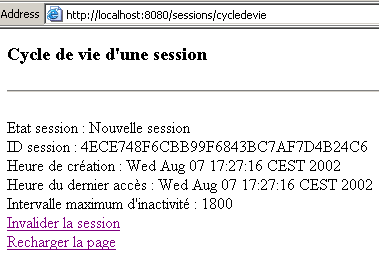
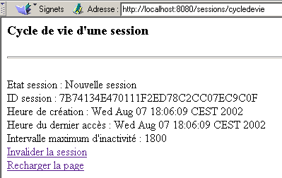
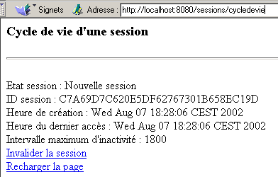
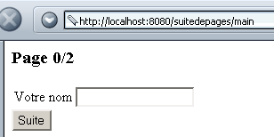
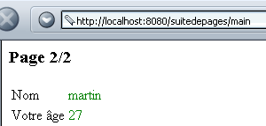

4. Seguimiento de sesión
4.1. El problema
Una aplicación web puede consistir en varios intercambios de formularios entre el servidor y el cliente. El proceso funciona de la siguiente manera:
- Paso 1
- El cliente C1 abre una conexión con el servidor y realiza su solicitud inicial.
- El servidor envía el formulario F1 al cliente C1 y cierra la conexión establecida en el paso 1.
- Paso 2
- El cliente C1 lo rellena y lo envía de vuelta al servidor. Para ello, el navegador abre una nueva conexión con el servidor.
- El servidor procesa los datos del formulario 1, calcula la información I1 a partir de ellos, envía el formulario F2 al cliente C1 y cierra la conexión abierta en el paso 3.
- Paso 3
- El ciclo de los pasos 3 y 4 se repite en los pasos 5 y 6. Al final del paso 6, el servidor habrá recibido dos formularios, F1 y F2, y habrá calculado la información I1 e I2 a partir de ellos.
El problema que nos ocupa es: ¿cómo realiza el servidor el seguimiento de la información I1 e I2 asociada al cliente C1? Este problema se denomina seguimiento de la sesión del cliente C1. Para comprender su causa raíz, examinemos el diagrama de una aplicación de servidor TCP-IP que atiende a varios clientes simultáneamente:
 |
En una aplicación clásica de cliente-servidor TCP-IP:
- el cliente establece una conexión con el servidor
- intercambia datos con el servidor a través de esta conexión
- una de las dos partes cierra la conexión
Los dos puntos clave de este mecanismo son:
- se crea una única conexión para cada cliente
- esta conexión se utiliza durante toda la duración del diálogo del servidor con su cliente
Lo que permite al servidor saber en todo momento con qué cliente está trabajando es la conexión —o, en otras palabras, el «canal»— que lo une a su cliente. Dado que este canal está dedicado a un cliente específico, todo lo que pasa por él proviene de ese cliente, y todo lo que se envía a través de él llega al cliente.
El mecanismo cliente-servidor HTTP sigue de cerca el modelo anterior, con la excepción de que el diálogo cliente-servidor se limita a un único intercambio entre el cliente y el servidor:
- el cliente abre una conexión con el servidor y realiza su solicitud
- el servidor envía su respuesta y cierra la conexión
Si en el momento T1, un cliente C realiza una solicitud al servidor, obtiene una conexión C1 que se utilizará para el único intercambio de solicitud-respuesta. Si, en el momento T2, este mismo cliente realiza una segunda solicitud al servidor, obtendrá una conexión C2 diferente de la conexión C1. Para el servidor, no hay entonces ninguna diferencia entre esta segunda solicitud del usuario C y su solicitud inicial: en ambos casos, el servidor trata al cliente como un nuevo cliente. Para que exista un vínculo entre las diferentes conexiones del cliente C al servidor, el cliente C debe ser «reconocido» por el servidor como un «cliente habitual» y el servidor debe recuperar la información que tiene sobre este cliente habitual.
Imaginemos un sistema que funciona de la siguiente manera:
- Hay una única cola
- Hay varios mostradores de atención. Esto significa que se puede atender a varios clientes al mismo tiempo. Cuando un mostrador queda libre, un cliente abandona la cola para ser atendido en ese mostrador
- Si es la primera visita del cliente, el cajero le entrega un ticket con un número. El cliente solo puede hacer una pregunta. Una vez que recibe su respuesta, debe abandonar la ventanilla del cajero y volver al final de la cola. El cajero registra la información del cliente en un archivo con su número.
- Cuando le vuelve a tocar el turno, es posible que el cliente sea atendido por un cajero diferente al de la vez anterior. El cajero le pide su ficha y recupera el expediente con el número de la ficha. Una vez más, el cliente realiza una solicitud, recibe una respuesta y se añade información a su expediente.
- Y así sucesivamente... Con el tiempo, el cliente recibirá respuestas a todas sus solicitudes. El seguimiento entre las diferentes solicitudes se realiza a través de la ficha y el expediente asociado a ella.
El mecanismo de seguimiento de sesiones en una aplicación web cliente-servidor funciona de manera similar:
- Al realizar su primera solicitud, el servidor web emite un token al cliente
- y presentará este token con cada solicitud posterior para identificarse
El token puede adoptar diversas formas:
- un campo oculto en un formulario
- el cliente realiza su primera solicitud (el servidor la reconoce porque el cliente no tiene token)
- El servidor envía su respuesta (un formulario) y coloca el token en un campo oculto dentro de este. En este punto, se cierra la conexión (el cliente abandona la sesión con su token). El servidor puede tener información asociada a este token.
- El cliente realiza una segunda solicitud reenviando el formulario. El servidor recupera el token del formulario. A continuación, puede procesar la segunda solicitud del cliente accediendo, a través del token, a la información calculada durante la primera solicitud. Se añade nueva información al archivo asociado al token, se envía una segunda respuesta al cliente y se cierra la conexión por segunda vez. El token se ha vuelto a colocar en el formulario de respuesta para que el usuario pueda presentarlo durante su próxima solicitud.
- Y así sucesivamente...
El principal inconveniente de esta técnica es que el token debe colocarse en un formulario. Si la respuesta del servidor no es un formulario, ya no se puede utilizar el método del campo oculto.
- El método de la cookie
- El cliente realiza su primera solicitud (el servidor lo reconoce porque el cliente no tiene token)
- El servidor responde añadiendo una cookie a los encabezados HTTP. Esto se hace utilizando el comando HTTP Set-Cookie:
Set-Cookie: param1=valor1;param2=valor2;....
donde param1, param2, etc., son nombres de parámetros y sus valores correspondientes. Entre los parámetros se encontrará el token. Muy a menudo, solo se incluye el token en la cookie, y el servidor almacena el resto de la información en la carpeta asociada al token. El navegador que recibe la cookie la almacenará en un archivo en el disco. Tras la respuesta del servidor, se cierra la conexión (el cliente abandona la sesión con su token).
- (continuación)
- El cliente realiza su segunda solicitud al servidor. Cada vez que se realiza una solicitud a un servidor, el navegador comprueba entre todas las cookies que tiene para ver si tiene alguna del servidor solicitado. Si es así, la envía al servidor, siempre en forma de comando HTTP: el comando Cookie, que tiene una sintaxis similar a la del comando Set-Cookie utilizado por el servidor:
Cookie: param1=valor1;param2=valor2;....
Entre los parámetros enviados por el navegador, el servidor encontrará el token que le permite reconocer al cliente y recuperar la información asociada a él.
Esta es la forma de token más utilizada. Tiene un inconveniente: un usuario puede configurar su navegador para que rechace las cookies. En ese caso, dichos usuarios no podrán acceder a las aplicaciones web que utilizan cookies.
- Reescritura de URL
- El cliente realiza su primera solicitud (el servidor la reconoce porque el cliente no tiene token)
- El servidor envía su respuesta. Esta respuesta contiene enlaces que el usuario debe utilizar para seguir utilizando la aplicación. En la URL de cada uno de estos enlaces, el servidor añade el token en el formato URL;token=valor.
- Cuando el usuario hace clic en uno de los enlaces para seguir utilizando la aplicación, el navegador envía una solicitud al servidor web, incluyendo la URL solicitada (URL;token=valor) en los encabezados HTTP. El servidor puede entonces recuperar el token.
4.2. La API de Java para el seguimiento de sesiones
A continuación, presentaremos los principales métodos útiles para el seguimiento de sesiones:
Recupera el objeto Session al que pertenece la solicitud actual. Si la solicitud aún no formaba parte de una sesión, se crea una. | |
Identificador de la sesión actual | |
Fecha de creación de la sesión actual (número de milisegundos transcurridos desde el 1 de enero de 1970 a las 00:00). | |
fecha del último acceso del cliente a la sesión | |
duración máxima en segundos de inactividad de una sesión. Tras este periodo, la sesión se invalida. | |
Establece la duración máxima de inactividad de una sesión en segundos. Tras este periodo, la sesión se invalida. | |
true si la sesión acaba de crearse | |
Asocia un valor a un parámetro en una sesión determinada. Este mecanismo permite almacenar información que permanecerá disponible durante toda la sesión. | |
Elimina el parámetro de los datos de la sesión. | |
devuelve el valor asociado al parámetro en la sesión. Devuelve null si el parámetro no existe. | |
enumera todos los atributos de la sesión actual como una enumeración | |
cierra la sesión actual. Se destruye toda la información asociada a ella. |
4.3. Ejemplo 1
Presentamos un ejemplo extraído del excelente libro «Programming with J2EE», publicado por Wrox y distribuido por Eyrolles. Este libro es un tesoro de información de alto nivel para desarrolladores de soluciones web en Java. La aplicación que se presenta en este libro como un único servlet de Java se ha adaptado aquí como un servlet principal que llama a páginas JSP para mostrar las diversas respuestas posibles al cliente.
La aplicación se llama «sessions» y está configurada de la siguiente manera en el archivo <tomcat>\conf\server.xml:
En la carpeta docBase anterior, encontrarás los siguientes elementos:

Los archivos error.jsp, invalid.jsp y valid.jsp están todos asociados a la aplicación sessions. En la carpeta WEB-INF anterior, encontramos:

Arriba se muestra el archivo de configuración web.xml de la aplicación sessions. En la carpeta classes, encontrarás el archivo de clase del servlet:

El archivo web.xml de la aplicación es el siguiente:
<?xml version="1.0" encoding="ISO-8859-1"?>
<!DOCTYPE web-app
PUBLIC "-//Sun Microsystems, Inc.//DTD Web Application 2.3//EN"
"http://java.sun.com/dtd/web-app_2_3.dtd">
<web-app>
<servlet>
<servlet-name>cycledevie</servlet-name>
<servlet-class>cycledevie</servlet-class>
<init-param>
<param-name>urlSessionValide</param-name>
<param-value>/valide.jsp</param-value>
</init-param>
<init-param>
<param-name>urlSessionInvalide</param-name>
<param-value>/invalide.jsp</param-value>
</init-param>
<init-param>
<param-name>urlErreur</param-name>
<param-value>/erreur.jsp</param-value>
</init-param>
</servlet>
<servlet-mapping>
<servlet-name>cycledevie</servlet-name>
<url-pattern>/cycledevie</url-pattern>
</servlet-mapping>
</web-app>
El servlet principal se llama cycledevie (servlet-name) y está asociado al archivo cycledevie.class (servlet-class). Tiene un alias /cycledevie (servlet-mapping) que permite llamarlo a través de la URL http://localhost:8080/sessions/cycledevie. Tiene tres parámetros de inicialización:
URL de la página que muestra las propiedades de la sesión actual | |
URL de la página que se muestra tras invalidar la sesión actual | |
URL de la página que se muestra en caso de error de inicialización del servlet principal cycledevie |
Los componentes de la aplicación de sesiones son los siguientes:
servlet principal: analiza la solicitud del cliente:
| |
| |
se muestra cuando el usuario ha invalidado la sesión actual. A continuación, ofrece la posibilidad de crear una nueva. | |
se muestra cuando el servlet principal encuentra errores durante la inicialización. |
El ciclo de vida del servlet principal es el siguiente:
import java.io.*;
import javax.servlet.*;
import javax.servlet.http.*;
public class cycledevie extends HttpServlet{
// instance variables
String msgErreur=null;
String urlSessionInvalide=null;
String urlSessionValide=null;
String urlErreur=null;
//-------- GET
public void doGet(HttpServletRequest request, HttpServletResponse response)
throws IOException, ServletException{
// was the initialization successful?
if(msgErreur!=null){
// we hand over to the error page
getServletContext().getRequestDispatcher(urlErreur).forward(request,response);
}
// retrieve the current session
HttpSession session=request.getSession();
// analyze the action to be taken
String action=request.getParameter("action");
// invalidate current session
if(action!=null && action.equals("invalider")){
// the current session is invalidated
session.invalidate();
// we hand over to the urlSessionInvalide url
getServletContext().getRequestDispatcher(urlSessionInvalide).forward(request,response);
}
// other cases
// we hand over to the urlSessionInvalide url
getServletContext().getRequestDispatcher(urlSessionValide).forward(request,response);
}
//-------- POST
public void doPost(HttpServletRequest request, HttpServletResponse response)
throws IOException, ServletException{
doGet(request,response);
}
//-------- INIT
public void init(){
// retrieve initialization parameters
ServletConfig config=getServletConfig();
urlSessionInvalide=config.getInitParameter("urlSessionInvalide");
urlSessionValide=config.getInitParameter("urlSessionValide");
urlErreur=config.getInitParameter("urlErreur");
// parameters ok?
if(urlSessionValide==null || urlSessionInvalide==null){
msgErreur="Configuration incorrecte";
}
}
}
Tenga en cuenta los siguientes puntos:
- En su método de inicialización, el servlet recupera sus tres parámetros
- Al procesar (doGet) una solicitud, el servlet:
- primero comprueba que no se haya producido ningún error durante la inicialización. Si se ha producido alguno, redirige a la página error.jsp.
- comprueba el valor del parámetro «action». Si este parámetro tiene el valor «invalid», el servlet redirige a la página invalid.jsp; en caso contrario, a la página valid.jsp.
La página JSP **valide.jsp** muestra las características de la sesión actual:
<%@ page import="java.util.*" %>
<%
// jspService
// ici on est dans le cas où on doit décrire la session en cours
String etat= session.isNew() ? "Nouvelle session" : "Ancienne session";
%>
<!-- top of page HTML -->
<html>
<meta http-equiv="pragma" content="no-cache">
<head>
<title>Cycle de vie d'une session</title>
</head>
<body>
<h3>Cycle de vie d'une session</h3>
<hr>
<br>Etat session : <%= etat %>
<br>ID session : <%= session.getId() %>
<br>Heure de création : <%= new Date(session.getCreationTime()) %>
<br>Heure du dernier accès : <%= new Date(session.getLastAccessedTime()) %>
<br>Intervalle maximum d'inactivité : <%= session.getMaxInactiveInterval() %>
<br><a href="/sessions/cycledevie?action=invalider">Invalider la session</a>
<br><a href="/sessions/cycledevie">Recharger la page</a>
<body>
</html>
Tenga en cuenta que en la línea
utilizamos un objeto de sesión que aparece de la nada. De hecho, este objeto es uno de los objetos implícitos que están disponibles para las páginas JSP, al igual que los objetos request, response, out, config (ServletConfig) y context (ServletContext) que ya hemos visto. Los dos enlaces de la página hacen referencia al servlet de ciclo de vida presentado anteriormente:
<br><a href="/sessions/cycledevie?action=invalider">Invalider la session</a>
<br><a href="/sessions/cycledevie">Recharger la page</a>
El enlace para invalidar la sesión incluye el parámetro action=invalidate, que permite al servlet de ciclo de vida reconocer que el usuario desea invalidar la sesión actual. El otro enlace recarga la página. Para evitar que el navegador recupere la página de la caché, la directiva HTML:
. Esta directiva indica al navegador que no utilice la caché para la página que recibe.
La página invalidate.jsp es la siguiente:
<!-- top of page HTML -->
<html>
<head>
<title>Cycle de vie d'une session</title>
</head>
<body>
<h3>Cycle de vie d'une session</h3>
<hr>
Votre session a été invalidée
<a href="/sessions/cycledevie">Créer une nouvelle session</a>
</body>
</html>
Proporciona un enlace al servlet cycledevie sin el parámetro de acción. Este enlace hará que el servlet cycledevie cree una nueva sesión.
La página error.jsp es la siguiente:
<%
// jspService
// ici on est dans le cas où on doit décrire la session en cours
String msgErreur= request.getAttribute("msgErreur");
if(msgErreur==null) msgErreur="Erreur non identifiée)";
%>
<!-- top of page HTML -->
<html>
<head>
<title>Cycle de vie d'une session</title>
</head>
<body>
<h3>Cycle de vie d'une session</h3>
<hr>
Application indisponible(<%= msgErreur %>)
</body>
</html>
Su función es mostrar el mensaje de error que le envía el servlet de ciclo de vida. Veamos ahora algunos ejemplos de ejecución. Se solicita el servlet por primera vez:

La página anterior indica que estamos en una nueva sesión. Utilizamos el enlace «Recargar página»:

El resultado anterior indica que seguimos en la misma sesión que en la página anterior (mismo ID). Obsérvese que ha cambiado la hora del último acceso a esta sesión. Ahora utilicemos el enlace «Invalidar sesión»:

Fíjate en la URL de esta nueva página con el parámetro action=invalidate. Utilicemos el enlace «Crear una nueva sesión» para crear una nueva sesión:

Podemos ver que se ha iniciado una nueva sesión. En los ejemplos anteriores, la sesión se basa en el mecanismo de cookies. Desactivemos ahora las cookies en nuestro navegador y repitamos las pruebas. Los siguientes ejemplos se realizaron utilizando Netscape Communicator. Por alguna razón inexplicable, las pruebas realizadas con IE6 arrojaron resultados inesperados, como si IE6 continuara utilizando cookies a pesar de que se habían desactivado. Se solicita el servlet cycledevie por primera vez:

Ahora utilizamos el enlace «Actualizar página»:

Podemos observar dos cosas:
- el ID de sesión ha cambiado
- el servlet detecta la sesión como una sesión nueva
El servidor Tomcat ofrece una solución al problema de los usuarios que desactivan las cookies en su navegador. Utiliza dos mecanismos para implementar el token mencionado al principio de este párrafo: las cookies y la reescritura de URL. Si la cookie de sesión no está disponible, intentará recuperar el token de la URL solicitada por el cliente. Para que esto funcione, la URL debe contener el token. En términos generales, todos los enlaces generados en un documento HTML que apunten a la aplicación web deben contener el token de la aplicación. Esto se puede hacer utilizando el método encodeURL:
añade el token de la sesión actual a la URL pasada como parámetro en el formato URL;jsessionid=xxxx |
Modificamos nuestra aplicación de la siguiente manera:
- En el servlet cycledevie.java, las URL están codificadas:
// we hand over to the error page
getServletContext().getRequestDispatcher(response.encodeURL(urlErreur)).forward(request,response);
....
// we hand over to the urlSessionInvalide url
getServletContext().getRequestDispatcher(response.encodeURL(urlSessionInvalide)).forward(request,response);
....
// we hand over to the urlSessionInvalide url
getServletContext().getRequestDispatcher(response.encodeURL(urlSessionValide)).forward(request,response);
- En la página valide.jsp, las URL están codificadas:
<%
// jspService
// ici on est dans le cas où on doit décrire la session en cours
String etat= session.isNew() ? "Nouvelle session" : "Ancienne session";
// encodage URL cycledevie
String URLcycledevie=response.encodeURL("/sessions/cycledevie");
%>
............
<br><a href="<%= URLcycledevie %>?action=invalider">Invalider la session</a>
<br><a href="<%= URLcycledevie %>">Recharger la page</a>
- En la página invalide.jsp, las URL están codificadas:
<%
// jspservice - on invalide la session en cours
session.invalidate();
// encodage URL cycledevie
String URLcycledevie=response.encodeURL("/sessions/cycledevie");
%>
..........
<a href="<%= URLcycledevie %>">Créer une nouvelle session</a>
Ahora estamos listos para realizar las pruebas. Estamos utilizando Netscape 4.5 y las cookies están desactivadas. Solicitamos el servlet cycledevie por primera vez:

y recargamos la página utilizando el enlace «Recargar página»:

Podemos ver que:
- la sesión no ha cambiado (mismo ID)
- la URL del servlet cycledevie contiene efectivamente el token, tal y como se muestra en el campo «Dirección» más arriba
- por lo tanto, el servidor Tomcat recupera el token de sesión de la URL solicitada (si el desarrollador se ha encargado de codificarlo).
4.4. Ejemplo 2
A continuación, presentamos un ejemplo que muestra cómo almacenar información en la sesión de un cliente. En este caso, la única información será un contador que se incrementa cada vez que el usuario llama a la URL del servlet. Cuando se llama por primera vez, aparece la siguiente página:

Si haces clic en el enlace «Recargar página» de arriba, aparecerá la siguiente página nueva:

La aplicación tiene tres componentes:
- un servlet que procesa la solicitud del cliente
- una página JSP que muestra el valor del contador
- una página JSP que muestra los errores
Estos tres componentes se han instalado en la aplicación web «sessions» que ya está en uso. Se ha modificado su archivo web.xml para configurar los nuevos servlets:
<?xml version="1.0" encoding="ISO-8859-1"?>
<!DOCTYPE web-app
PUBLIC "-//Sun Microsystems, Inc.//DTD Web Application 2.3//EN"
"http://java.sun.com/dtd/web-app_2_3.dtd">
<web-app>
...
<servlet>
<servlet-name>compteur</servlet-name>
<servlet-class>compteur</servlet-class>
<init-param>
<param-name>urlAffichageCompteur</param-name>
<param-value>/compteur.jsp</param-value>
</init-param>
<init-param>
<param-name>urlErreur</param-name>
<param-value>/erreurcompteur.jsp</param-value>
</init-param>
</servlet>
...
<servlet-mapping>
<servlet-name>compteur</servlet-name>
<url-pattern>/compteur</url-pattern>
</servlet-mapping>
</web-app>
- El servlet se llama counter (servlet-name) y está vinculado al archivo de clase counter.class (servlet-class)
- Tiene dos parámetros de inicialización:
- displayCounterURL: URL de la página JSP que muestra el contador
- urlErreur: URL de la página JSP que muestra los errores
- y un alias /compteur, lo que significa que se llamará a través de la URL http://localhost:8080/sessions/compteur
El servlet compteur.java es el siguiente:
import java.io.*;
import javax.servlet.*;
import javax.servlet.http.*;
public class compteur extends HttpServlet{
// instance variables
String msgErreur=null;
String urlAffichageCompteur=null;
String urlErreur=null;
//-------- GET
public void doGet(HttpServletRequest request, HttpServletResponse response)
throws IOException, ServletException{
// was the initialization successful?
if(msgErreur!=null){
// we hand over to the error page
getServletContext().getRequestDispatcher(urlErreur).forward(request,response);
}
// retrieve the current session
HttpSession session=request.getSession();
// and the
String compteur=(String)session.getAttribute("compteur");
if(compteur==null) compteur="0";
// counter incrementation
try{
compteur=""+(Integer.parseInt(compteur)+1);
}catch(Exception ex){}
// save counter in session
session.setAttribute("compteur",compteur);
// and in the query
request.setAttribute("compteur",compteur);
// hand over to counter display url
getServletContext().getRequestDispatcher(urlAffichageCompteur).forward(request,response);
}
//-------- POST
public void doPost(HttpServletRequest request, HttpServletResponse response)
throws IOException, ServletException{
doGet(request,response);
}
//-------- INIT
public void init(){
// retrieve initialization parameters
ServletConfig config=getServletConfig();
urlAffichageCompteur=config.getInitParameter("urlAffichageCompteur");
urlErreur=config.getInitParameter("urlErreur");
// parameters ok?
if(urlAffichageCompteur==null){
msgErreur="Configuration incorrecte";
}
}
}
Este servlet tiene la misma estructura que los servlets que ya hemos visto. Fíjate en cómo se gestiona el contador:
- la sesión se recupera mediante request.getSession()
- el contador se recupera de esta sesión mediante session.getAttribute("counter")
- si se recupera un valor nulo, significa que la sesión acaba de comenzar. A continuación, el contador se establece en 0.
- el contador se incrementa, se vuelve a almacenar en la sesión (session.setAttribute("counter", counter)) y se coloca en la solicitud que se pasará al servlet de visualización (request.setAttribute("counter", counter)).
La página de visualización, compteur.jsp, es la siguiente:
<%
// jspService
// on récupère le compteur
String compteur= (String) request.getAttribute("compteur");
if(compteur==null) compteur="inconnu";
%>
<!-- top of page HTML -->
<html>
<head>
<title>Comptage au fil d'une session</title>
</head>
<body>
<h3>Comptage au fil d'une session (nécessite l'activation des cookies)</h3>
<hr>
compteur = (<%= compteur %>)
<br><a href="/sessions/compteur">Recharger la page</a>
</body>
</html>
La página anterior simplemente recupera el atributo «counter» (request.getAttribute("counter")) que le pasa el servlet principal y lo muestra.
La página de error, *erreurcompteur.jsp,* es la siguiente:
<%
// jspService
// une erreur s'est produite
String msgErreur= request.getAttribute("msgErreur");
if(msgErreur==null) msgErreur="Erreur non identifiée";
%>
<!-- top of page HTML -->
<html>
<head>
<title>Comptage au fil d'une session</title>
</head>
<body>
<h3>Comptage au fil d'une session (nécessite l'activation des cookies)</h3>
<hr>
Application indisponible(<%= msgErreur %>)
</body>
</html>
4.5. Ejemplo 3
Proponemos escribir una aplicación Java que actúe como cliente de la aplicación de contador anterior. La llamaría N veces seguidas, donde N se pasa como parámetro. Nuestro objetivo es mostrar un cliente web programado y cómo gestionar las cookies. Nuestro punto de partida será un cliente web genérico presentado en el folleto de Java del mismo autor. Se llama de la siguiente manera:
webclient URL GET/HEAD
- URL: URL solicitada
- GET/HEAD: GET para solicitar el código HTML de la página, HEAD para limitar la respuesta únicamente a los encabezados HTTP
A continuación se muestra un ejemplo con la URL http://localhost:8080/sessions/compteur:
E:\data\serge\JAVA\SOCKETS\client web>java clientweb http://localhost:8080/sessions/compteur GET
HTTP/1.1 200 OK
Content-Type: text/html;charset=ISO-8859-1
Date: Thu, 08 Aug 2002 14:21:18 GMT
Connection: close
Server: Apache Tomcat/4.0.3 (HTTP/1.1 Connector)
Set-Cookie: JSESSIONID=B8A9076E552945009215C34A97A0EC5D;Path=/sessions
<!-- top of page HTML -->
<html>
<head>
<title>Comptage au fil d'une session</title>
</head>
<body>
<h3>Comptage au fil d'une session (nécessite l'activation des cookies)</h3>
<hr>
compteur = (1)
<br><a href="/sessions/compteur">Recharger la page</a>
</body>
</html>
El programa clientweb muestra todo lo que recibe del servidor. Arriba, vemos el comando HTTP Set-cookie, que el servidor utiliza para enviar una cookie a su cliente. En este caso, la cookie contiene dos datos:
- JSESSIONID, que es el token de sesión
- Path, que define la URL a la que pertenece la cookie. Path=/sessions indica al navegador que debe reenviar la cookie al servidor cada vez que solicite una URL que comience por /sessions. En la aplicación sessions, utilizamos varios servlets, incluidos los servlets /sessions/lifecycle y /sessions/counter. Si llamamos al servlet /sessions/cycledevie, el navegador recibirá un token J. Si, utilizando el mismo navegador, llamamos a continuación al servlet /sessions/compteur, el navegador enviará el token J de vuelta al servidor, ya que se aplica a todas las URL que comienzan por /sessions. En nuestro ejemplo, los servlets cycledevie y compteur no necesitan compartir el mismo token de sesión. Por lo tanto, no deberían haberse colocado en la misma aplicación web. Este es un punto importante que hay que recordar: todos los servlets dentro de la misma aplicación comparten el mismo token de sesión.
- Una cookie también puede tener una fecha de caducidad. En este caso, falta esta información. Por lo tanto, la cookie se eliminará cuando se cierre el navegador. Una cookie puede tener una fecha de caducidad de N días, por ejemplo. Mientras sea válida, el navegador la reenviará cada vez que se acceda a una de las URL de su dominio (Path). Pensemos en una tienda de CD en línea. Esta puede rastrear la ruta de navegación de un cliente a través de su catálogo y determinar gradualmente sus preferencias, por ejemplo, la música clásica. Estas preferencias pueden almacenarse en una cookie con una vida útil de 3 meses. Si ese mismo cliente vuelve al sitio después de un mes, el navegador reenviará la cookie a la aplicación del servidor. Basándose en la información contenida en la cookie, la aplicación del servidor puede entonces adaptar las páginas generadas a las preferencias del cliente.
A continuación se muestra el código del cliente web. Más adelante servirá como punto de partida para otro cliente.
// imported packages
import java.io.*;
import java.net.*;
public class clientweb{
// requests a URL
// displays its contents on the screen
public static void main(String[] args){
// syntax
final String syntaxe="pg URI GET/HEAD";
// number of arguments
if(args.length != 2)
erreur(syntaxe,1);
// note the URI required
String URLString=args[0];
String commande=args[1].toUpperCase();
// URI validity check
URL url=null;
try{
url=new URL(URLString);
}catch (Exception ex){
// URI incorrect
erreur("L'erreur suivante s'est produite : " + ex.getMessage(),2);
}//catch
// order verification
if(! commande.equals("GET") && ! commande.equals("HEAD")){
// incorrect order
erreur("Le second paramètre doit être GET ou HEAD",3);
}
// extract useful information from URL
String path=url.getPath();
if(path.equals("")) path="/";
String query=url.getQuery();
if(query!=null) query="?"+query; else query="";
String host=url.getHost();
int port=url.getPort();
if(port==-1) port=url.getDefaultPort();
// we can work
Socket client=null; // the customer
BufferedReader IN=null; // the customer's reading flow
PrintWriter OUT=null; // the customer's writing flow
String réponse=null; // server response
try{
// connect to the server
client=new Socket(host,port);
// create customer input/output flows TCP
IN=new BufferedReader(new InputStreamReader(client.getInputStream()));
OUT=new PrintWriter(client.getOutputStream(),true);
// request URL - send HTTP headers
OUT.println(commande + " " + path + query + " HTTP/1.1");
OUT.println("Host: " + host + ":" + port);
OUT.println("Connection: close");
OUT.println();
// we read the answer
while((réponse=IN.readLine())!=null){
// the answer is processed
System.out.println(réponse);
}//while
// it's over
client.close();
} catch(Exception e){
// we handle the exception
erreur(e.getMessage(),4);
}//catch
}//hand
// error display
public static void erreur(String msg, int exitCode){
// error display
System.err.println(msg);
// stop with error
System.exit(exitCode);
}//error
}//class
Ahora creamos el programa clientCounter, que se invoca de la siguiente manera:
clientCounter URL N [JSESSIONID]
- URL: URL del servlet contador
- N: número de llamadas que se realizarán a este servlet
- JSESSIONID: parámetro opcional — token de sesión
El objetivo del programa es llamar al servlet contador N veces gestionando la cookie de sesión y mostrando el valor del contador devuelto por el servidor en cada ocasión. Al final de las N llamadas, el valor del contador debe ser N. A continuación se muestra un primer ejemplo de ejecución:
E:\data\serge\Servlets\sessions\jb7>java.bat clientCompteur http://localhost:8080/sessions/counter 3
--> GET /sessions/compteur HTTP/1.1
--> Host: localhost:8080
--> Connection: close
-->
HTTP/1.1 200 OK
Content-Type: text/html;charset=ISO-8859-1
Date: Thu, 08 Aug 2002 18:25:00 GMT
Connection: close
Server: Apache Tomcat/4.0.3 (HTTP/1.1 Connector)
Set-Cookie: JSESSIONID=92DB3808CE8FCB47D47D997C8B52294A;Path=/sessions
cookie trouvÚ : 92DB3808CE8FCB47D47D997C8B52294A
compteur : 1
--> GET /sessions/compteur HTTP/1.1
--> Host: localhost:8080
--> Cookie: JSESSIONID=92DB3808CE8FCB47D47D997C8B52294A
--> Connection: close
-->
HTTP/1.1 200 OK
Content-Type: text/html;charset=ISO-8859-1
Date: Thu, 08 Aug 2002 18:25:00 GMT
Connection: close
Server: Apache Tomcat/4.0.3 (HTTP/1.1 Connector)
compteur : 2
--> GET /sessions/compteur HTTP/1.1
--> Host: localhost:8080
--> Cookie: JSESSIONID=92DB3808CE8FCB47D47D997C8B52294A
--> Connection: close
-->
HTTP/1.1 200 OK
Content-Type: text/html;charset=ISO-8859-1
Date: Thu, 08 Aug 2002 18:25:00 GMT
Connection: close
Server: Apache Tomcat/4.0.3 (HTTP/1.1 Connector)
compteur : 3
El programa muestra:
- los encabezados HTTP que envía al servidor en el formulario -->
- los encabezados HTTP que recibe
- el valor del contador tras cada llamada
Podemos ver que durante la primera llamada:
- el cliente no envía una cookie
- el servidor envía una
Para las solicitudes posteriores:
- el cliente devuelve sistemáticamente la cookie que recibió del servidor durante la primera solicitud. Esto es lo que permite al servidor reconocerlo e incrementar su contador.
- el servidor ya no envía una cookie
Volvemos a ejecutar el programa anterior pasando el token anterior como tercer parámetro:
E:\data\serge\Servlets\sessions\jb7>java.bat clientCompteur http://localhost:8080/sessions/compteur 3 92DB3808CE8FCB47D47D997C8B52294A
--> GET /sessions/compteur HTTP/1.1
--> Host: localhost:8080
--> Cookie: JSESSIONID=92DB3808CE8FCB47D47D997C8B52294A
--> Connection: close
-->
HTTP/1.1 200 OK
Content-Type: text/html;charset=ISO-8859-1
Date: Thu, 08 Aug 2002 18:25:25 GMT
Connection: close
Server: Apache Tomcat/4.0.3 (HTTP/1.1 Connector)
compteur : 4
--> GET /sessions/compteur HTTP/1.1
--> Host: localhost:8080
--> Cookie: JSESSIONID=92DB3808CE8FCB47D47D997C8B52294A
--> Connection: close
-->
HTTP/1.1 200 OK
Content-Type: text/html;charset=ISO-8859-1
Date: Thu, 08 Aug 2002 18:25:25 GMT
Connection: close
Server: Apache Tomcat/4.0.3 (HTTP/1.1 Connector)
compteur : 5
--> GET /sessions/compteur HTTP/1.1
--> Host: localhost:8080
--> Cookie: JSESSIONID=92DB3808CE8FCB47D47D997C8B52294A
--> Connection: close
-->
HTTP/1.1 200 OK
Content-Type: text/html;charset=ISO-8859-1
Date: Thu, 08 Aug 2002 18:25:25 GMT
Connection: close
Server: Apache Tomcat/4.0.3 (HTTP/1.1 Connector)
compteur : 6
Aquí vemos que, tan pronto como el cliente realiza su primera solicitud, el servidor recibe una cookie de sesión válida. Es importante señalar que, en Tomcat, el tiempo máximo de inactividad predeterminado para una sesión es de 20 minutos (esto, de hecho, es configurable). Si la segunda solicitud del programa envía la cookie recibida durante la primera solicitud con la suficiente rapidez, el servidor la tratará como si fuera la misma sesión. Esto pone de manifiesto una posible vulnerabilidad de seguridad. Si soy capaz de interceptar un token de sesión en la red, puedo suplantar al usuario que inició la sesión. En nuestro ejemplo, la primera llamada representa al usuario que inicia la sesión (quizás con un nombre de usuario y una contraseña que le otorgan el derecho a recibir un token), y la segunda llamada representa al usuario que ha «hackeado» el token de sesión de la primera llamada. Si la operación actual es una transacción bancaria, esto puede resultar muy problemático...
El código del cliente es el siguiente:
// imported packages
import java.io.*;
import java.net.*;
import java.util.regex.*;
public class clientCompteur{
// requests a URL
// displays its contents on the screen
public static void main(String[] args){
// syntax
final String syntaxe="pg URL-COMPTEUR N [JSESSIONID]";
// number of arguments
if(args.length !=2 && args.length != 3)
erreur(syntaxe,1);
// note the URL required
String URLString=args[0];
// URL validity check
URL url=null;
try{
url=new URL(URLString);
}catch (Exception ex){
// URI incorrect
erreur("L'erreur suivante s'est produite : " + ex.getMessage(),2);
}//catch
// check number of calls N
int N=0;
try{
N=Integer.parseInt(args[1]);
if(N<=0) throw new Exception();
}catch(Exception ex){
// incorrect N argument
erreur("Le nombre d'appels N doit être un entier >0",3);
}
// has the JSESSIONID token been passed as a parameter?
String JSESSIONID="";
if (args.length==3) JSESSIONID=args[2];
// extract useful information from URL
String path=url.getPath();
if(path.equals("")) path="/";
String query=url.getQuery();
if(query!=null) query="?"+query; else query="";
String host=url.getHost();
int port=url.getPort();
if(port==-1) port=url.getDefaultPort();
// we can work
Socket client=null; // the customer
BufferedReader IN=null; // the customer's reading flow
PrintWriter OUT=null; // the customer's writing flow
String réponse=null; // server response
// the model searched for in HTTP headers
Pattern modèleCookie=Pattern.compile("^Set-Cookie: JSESSIONID=(.*?);");
// the model searched for in the HTML code
Pattern modèleCompteur=Pattern.compile("compteur = .*?(\\d+)");
// the result of the model comparison
Matcher résultat=null;
// a Boolean giving the result of the counter search
boolean compteurTrouvé;
try{
// we make N calls to the server
for(int i=0;i<N;i++){
// connect to the server
client=new Socket(host,port);
// create customer input/output flows TCP
IN=new BufferedReader(new InputStreamReader(client.getInputStream()));
OUT=new PrintWriter(client.getOutputStream(),true);
// request URL - send HTTP headers
envoie(OUT,"GET " + path + query + " HTTP/1.1");
envoie(OUT,"Host: " + host + ":" + port);
if(! JSESSIONID.equals("")){
envoie(OUT,"Cookie: JSESSIONID="+JSESSIONID);
}
envoie(OUT,"Connection: close");
envoie(OUT,"");
// we read the response through to the end of the headers, looking for any cookies
while((réponse=IN.readLine())!=null){
// follow-up response
System.out.println(réponse);
// empty line?
if(réponse.equals("")) break;
// line HTTP not empty
// if you don't have the session token, look for it
if (JSESSIONID.equals("")){
// compare the HTTP line with the cookie template
résultat=modèleCookie.matcher(réponse);
if(résultat.find()){
// we found the cookie
JSESSIONID=résultat.group(1);
}
}
}//while
// that's it for HTTP headers - move on to HTML code
compteurTrouvé=false;
while((réponse=IN.readLine())!=null){
// does the current line contain the counter?
if (! compteurTrouvé){
résultat=modèleCompteur.matcher(réponse);
if(résultat.find()){
// counter found - displayed
System.out.println("compteur : " + résultat.group(1));
compteurTrouvé=true;
}
}
}//while
// it's over
client.close();
}//for
} catch(Exception e){
// we handle the exception
erreur(e.getMessage(),4);
}//catch
}//hand
// error display
public static void erreur(String msg, int exitCode){
// error display
System.err.println(msg);
// stop with error
System.exit(exitCode);
}//error
// monitoring client-server exchanges
public static void envoie(PrintWriter OUT,String msg){
// sends message to server
OUT.println(msg);
// screen tracking
System.out.println("--> "+msg);
}//error
}//class
Analicemos los puntos clave de este programa:
- Tenemos que realizar N intercambios entre el cliente y el servidor. Por eso están en un bucle
- En cada intercambio, el cliente abre una conexión TCP/IP con el servidor. Una vez establecida la conexión, envía los encabezados HTTP de su solicitud al servidor:
// on demande l'URL - envoi des entêtes HTTP
envoie(OUT,"GET " + path + query + " HTTP/1.1");
envoie(OUT,"Host: " + host + ":" + port);
if(! JSESSIONID.equals("")){
envoie(OUT,"Cookie: JSESSIONID="+JSESSIONID);
}
envoie(OUT,"Connection: close");
envoie(OUT,"");
Si el token JSESSIONID está disponible, se envía como una cookie; de lo contrario, no se envía.
- Una vez enviada la solicitud, el cliente espera la respuesta del servidor. Empieza por examinar los encabezados HTTP de esta respuesta para buscar una posible cookie. Para encontrarla, compara las líneas que recibe con la expresión regular de la cookie:
// the model searched in HTTP headers
Pattern modèleCookie=Pattern.compile("^Set-Cookie: JSESSIONID=(.*?);");
...........................
// we read the response through to the end of the headers, looking for any cookies
while((réponse=IN.readLine())!=null){
// follow-up response
System.out.println(réponse);
// empty line?
if(réponse.equals("")) break;
// line HTTP not empty
// if you don't have the session token, look for it
if (JSESSIONID.equals("")){
// compare the HTTP line with the cookie template
résultat=modèleCookie.matcher(réponse);
if(résultat.find()){
// we found the cookie
JSESSIONID=résultat.group(1);
}
}
}//while
- Una vez que se ha encontrado el token por primera vez, ya no se buscará en las llamadas posteriores al servidor. Una vez procesados los encabezados HTTP de la respuesta, pasamos al código HTML de esa misma respuesta. En él, buscamos la línea que proporciona el valor del contador. Esta búsqueda también se realiza mediante una expresión regular:
// the counter model searched for in the HTML code
Pattern modèleCompteur=Pattern.compile("compteur = .*?(\\d+)");
..................................
// that's it for HTTP headers - move on to HTML code
compteurTrouvé=false;
while((réponse=IN.readLine())!=null){
// does the current line contain the counter?
if (! compteurTrouvé){
résultat=modèleCompteur.matcher(réponse);
if(résultat.find()){
// counter found - displayed
System.out.println("compteur : " + résultat.group(1));
compteurTrouvé=true;
}
}
}//while
4.6. Ejemplo 4
En el ejemplo anterior, el cliente web devuelve el token como una cookie. Vimos que también podía devolverlo dentro de la propia URL solicitada en el formato URL;jsessionid=xxx. Comprobémoslo. El programa clientCompteur.java se renombra como clientCompteur2.java y se modifica de la siguiente manera:
....
// on demande l'URL - envoi des entêtes HTTP
if(JSESSIONID.equals(""))
envoie(OUT,"GET " + path + query + " HTTP/1.1");
else envoie(OUT,"GET " + path + query + ";jsessionid=" + JSESSIONID + " HTTP/1.1");
envoie(OUT,"Host: " + host + ":" + port);
envoie(OUT,"Connection: close");
envoie(OUT,"");
....
Por lo tanto, el cliente solicita la URL del contador mediante GET URL;jsessionid=xx HTTP/1.1 y ya no envía una cookie. Este es el único cambio. Estos son los resultados de una llamada inicial:
E:\data\serge\Servlets\sessions\jb7>java.bat clientCompteur2 http://localhost:8080/sessions/counter 2
--> GET /sessions/compteur HTTP/1.1
--> Host: localhost:8080
--> Connection: close
-->
HTTP/1.1 200 OK
Content-Type: text/html;charset=ISO-8859-1
Date: Thu, 08 Aug 2002 18:49:30 GMT
Connection: close
Server: Apache Tomcat/4.0.3 (HTTP/1.1 Connector)
Set-Cookie: JSESSIONID=48A6DBA8357D808EC012AAF3A2AFDA63;Path=/sessions
cookie trouvÚ : 48A6DBA8357D808EC012AAF3A2AFDA63
compteur : 1
--> GET /sessions/compteur;jsessionid=48A6DBA8357D808EC012AAF3A2AFDA63 HTTP/1.1
--> Host: localhost:8080
--> Connection: close
-->
HTTP/1.1 200 OK
Content-Type: text/html;charset=ISO-8859-1
Date: Thu, 08 Aug 2002 18:49:30 GMT
Connection: close
Server: Apache Tomcat/4.0.3 (HTTP/1.1 Connector)
compteur : 2
En la primera solicitud, el cliente solicita la URL sin un token de sesión. El servidor responde enviando el token. A continuación, el cliente vuelve a solicitar la misma URL, añadiendo el token recibido. Podemos ver que el contador se incrementa, lo que demuestra que el servidor ha reconocido correctamente que se trata de la misma sesión.
4.7. Ejemplo 5
Este ejemplo muestra una aplicación compuesta por tres páginas, a las que llamaremos página0, página1 y página2. El usuario debe acceder a ellas en este orden:
- página0 es un formulario que solicita información: un nombre
- página1 es un formulario recibido en respuesta al envío del formulario de la página0. Solicita un segundo dato: una edad
- página2 es un documento HTML que muestra el nombre obtenido de la página0 y la edad obtenida de la página1.
Aquí hay tres intercambios cliente-servidor:
- En el primer intercambio, el cliente solicita el formulario de la página 0 y el servidor lo envía
- En el segundo intercambio, el cliente solicita el formulario de la página1 y el servidor lo envía. El cliente envía el nombre al servidor.
- En el tercer intercambio, el cliente solicita el documento de la página 3 y el servidor lo envía. El cliente envía la edad al servidor. El documento de la página 3 debe mostrar el nombre y la edad. El servidor obtuvo el nombre en el segundo intercambio y, desde entonces, lo ha «olvidado». Se utiliza una sesión para almacenar el nombre del intercambio 2, de modo que esté disponible durante el intercambio 3.
El documento page0 obtenido en el primer intercambio es el siguiente:

Rellenamos el campo del nombre:

Hacemos clic en el botón «Siguiente» y aparece la siguiente página1:

Rellenamos el campo de la edad:

Hacemos clic en el botón «Siguiente» y aparece la siguiente página2:

Cuando se envía la página 0 al servidor, este puede devolverla con un código de error si el campo «nombre» está vacío:

Cuando envías la página 1 al servidor, este puede devolver un código de error si la edad no es válida:

La aplicación consta de un servlet y cuatro páginas JSP:
muestra la página 0 | |
muestra la página1 | |
muestra la página2 | |
muestra una página de error |
La aplicación web se llama suitedepages y está configurada de la siguiente manera en el archivo server.xml de Tomcat:
El archivo de configuración web.xml de la aplicación suitedepages es el siguiente:
<?xml version="1.0" encoding="ISO-8859-1"?>
<!DOCTYPE web-app
PUBLIC "-//Sun Microsystems, Inc.//DTD Web Application 2.3//EN"
"http://java.sun.com/dtd/web-app_2_3.dtd">
<web-app>
<servlet>
<servlet-name>main</servlet-name>
<servlet-class>main</servlet-class>
<init-param>
<param-name>urlPage0</param-name>
<param-value>/page0.jsp</param-value>
</init-param>
<init-param>
<param-name>urlPage1</param-name>
<param-value>/page1.jsp</param-value>
</init-param>
<init-param>
<param-name>urlPage2</param-name>
<param-value>/page2.jsp</param-value>
</init-param>
<init-param>
<param-name>urlErreur</param-name>
<param-value>/erreur.jsp</param-value>
</init-param>
</servlet>
<servlet-mapping>
<servlet-name>main</servlet-name>
<url-pattern>/main</url-pattern>
</servlet-mapping>
</web-app>
El servlet principal se llama main y, gracias a su alias (servlet-mapping), se puede acceder a él a través de la URL http://localhost:8080/suitedepages/main*. Tiene cuatro parámetros de inicialización, que son las URL de las cuatro páginas JSP utilizadas para las diferentes vistas. El código del servlet main* es el siguiente:
import java.io.*;
import javax.servlet.*;
import javax.servlet.http.*;
import java.util.*;
import java.util.regex.*;
public class main extends HttpServlet{
// instance variables
String msgErreur=null;
String urlPage0=null;
String urlPage1=null;
String urlPage2=null;
String urlErreur=null;
//-------- GET
public void doGet(HttpServletRequest request, HttpServletResponse response)
throws IOException, ServletException{
// was the initialization successful?
if(msgErreur!=null){
// we hand over to the error page
getServletContext().getRequestDispatcher(urlErreur).forward(request,response);
}
// we retrieve the step parameter
String étape=request.getParameter("etape");
// retrieve the current session
HttpSession session=request.getSession();
// the current step is processed
if(étape==null) étape0(request,response,session);
if(étape.equals("1")) étape1(request,response,session);
if(étape.equals("2")) étape2(request,response,session);
// other cases are invalid
étape0(request,response,session);
}
//-------- POST
public void doPost(HttpServletRequest request, HttpServletResponse response)
throws IOException, ServletException{
doGet(request,response);
}
//-------- INIT
public void init(){
// retrieve initialization parameters
ServletConfig config=getServletConfig();
urlPage0=config.getInitParameter("urlPage0");
urlPage1=config.getInitParameter("urlPage1");
urlPage2=config.getInitParameter("urlPage2");
urlErreur=config.getInitParameter("urlErreur");
// parameters ok?
if(urlPage0==null || urlPage1==null || urlPage2==null){
msgErreur="Configuration incorrecte";
}
}
//-------- step0
public void étape0(HttpServletRequest request, HttpServletResponse response, HttpSession session)
throws IOException, ServletException{
// we set a few attributes
request.setAttribute("nom","");
// we present page 0
request.getRequestDispatcher(urlPage0).forward(request,response);
}
//-------- step1
public void étape1(HttpServletRequest request, HttpServletResponse response, HttpSession session)
throws IOException, ServletException{
// retrieve the name from the query
String nom=request.getParameter("nom");
// name positioned?
if(nom==null) étape0(request,response,session);
// remove any spaces from the name
nom=nom.trim();
// we put it in a query attribute
request.setAttribute("nom",nom);
// empty name?
if(nom.equals("")){
// it's a mistake
ArrayList erreurs=new ArrayList();
erreurs.add("Nous n'avez pas indiqué de nom");
// put the errors in the query
request.setAttribute("erreurs",erreurs);
// back to page 0
étape0(request,response,session);
}
// valid name - stored in the current session
session.setAttribute("nom",nom);
// set the age attribute in the query
request.setAttribute("age","");
// we present page 1
request.getRequestDispatcher(urlPage1).forward(request,response);
}
//-------- step2
public void étape2(HttpServletRequest request, HttpServletResponse response, HttpSession session)
throws IOException, ServletException{
// retrieve the name from the session
String nom=(String)session.getAttribute("nom");
// name positioned?
if(nom==null) étape0(request,response,session);
// we put it in a query attribute
request.setAttribute("nom",nom);
// the age is retrieved from the query
String age=request.getParameter("age");
// age positioned?
if(age==null){
// back to page 1
request.setAttribute("age","");
request.getRequestDispatcher(urlPage1).forward(request,response);
}
// the age is stored in the query
age=age.trim();
request.setAttribute("age",age);
// valid age?
if(! Pattern.matches("^\\s*\\d+\\s*$",age)){
// this is a mistake
ArrayList erreurs=new ArrayList();
erreurs.add("Age invalide");
// put the errors in the query
request.setAttribute("erreurs",erreurs);
// back to page 1
request.getRequestDispatcher(urlPage1).forward(request,response);
}
// age valid - page 2 is presented
request.getRequestDispatcher(urlPage2).forward(request,response);
}
}
- El método init recupera los cuatro parámetros de inicialización y establece un mensaje de error si falta alguno de ellos
- Hemos visto que la solicitud consta de tres intercambios. Para realizar un seguimiento de la etapa actual de estos intercambios, los formularios page0 y page1 tienen una variable oculta «etape» con un valor de 1 (page0) o 2 (page1). Este número puede interpretarse como el número de la siguiente página que se va a mostrar. En el método doGet, este parámetro se recupera de la solicitud y, dependiendo de su valor, el procesamiento se delega a otros tres métodos:
- étape0 procesa la solicitud inicial y envía la página0
- étape1 procesa el formulario de la página0 y envía la página1 o la página0 de nuevo si se ha producido un error
- étape2 procesa el formulario de la página1 y envía la página2 o la página1 de nuevo si se ha producido un error
- step0
- muestra la página0 con un nombre vacío
- Paso 1
- Recupera el parámetro «nombre» del formulario de la página 0.
- Comprueba que el nombre exista (no sea nulo). Si no es así, se muestra de nuevo la página 0 como si fuera la primera llamada.
- Comprueba que el nombre no esté vacío. Si lo está, se vuelve a mostrar la página0 junto con un mensaje de error.
- Almacena el nombre en la sesión actual y muestra la página 1 si el nombre es válido.
- paso2
- Recupera el parámetro «name» de la sesión actual.
- Comprueba que el nombre existe (no es nulo). Si no es así, muestra de nuevo la página 0 como si fuera la primera llamada.
- Recupera el parámetro «edad» de la solicitud actual enviada por la página 1.
- Comprueba que la edad sea válida. Si no lo es, muestra de nuevo la página 1 con un mensaje de error.
- Almacena el nombre y la edad como atributos de la solicitud y muestra la página 2 si el nombre y la edad son válidos.
La página page0.jsp es la siguiente:
<%@ page import="java.util.*" %>
<% // page0.jsp
// on récupère les attributs de la requête
String nom=(String)request.getAttribute("nom");
ArrayList erreurs=(ArrayList)request.getAttribute("erreurs");
// attributs valides ?
if(nom==null){
// retour à la servlet principale
request.getRequestDispatcher("/main").forward(request,response);
}
%>
<html>
<head>
<title>page 0</title>
</head>
<body>
<h3>Page 0/2</h3>
<form name="frmNom" method="POST" action="/suitedepages/main">
<input type="hidden" name="etape" value="1">
<table>
<tr>
<td>Votre nom</td>
<td><input type="text" name="nom" value="<%= nom %>"></td>
</tr>
</table>
<input type="submit" value="Suite">
</form>
<% // erreurs ?
if (erreurs!=null){
%>
<hr>
<font color="red">
Les erreurs suivantes se sont produites
<ul>
<% for(int i=0;i<erreurs.size();i++){ %>
<li><%= erreurs.get(i) %>
<% }//for %>
</ul>
<% }//if %>
</body>
</html>
- La página page0.jsp puede ser llamada por el servlet principal en dos casos:
- durante la solicitud inicial
- tras procesar el formulario de page0 cuando se produce un error
- El servlet principal proporciona el parámetro `nameToDisplay`, junto con cualquier lista de errores. Por lo tanto, el servlet page0.jsp comienza recuperando estos dos datos.
- El formulario se «envía» al servlet principal con el campo oculto «etape», que indica en qué fase de la aplicación se encuentra el usuario.
La página page1.jsp es la siguiente:
<%@ page import="java.util.*" %>
<% // page1.jsp
// on récupère les attributs de la requête
String nom=(String)request.getAttribute("nom");
String age=(String)request.getAttribute("age");
ArrayList erreurs=(ArrayList)request.getAttribute("erreurs");
// attributs valides ?
if(nom==null || age==null){
// retour à la servlet principale
request.getRequestDispatcher("/main").forward(request,response);
}
%>
<html>
<head>
<title>page 1</title>
</head>
<body>
<h3>Page 1/2</h3>
<form name="frmAge" method="POST" action="/suitedepages/main">
<input type="hidden" name="etape" value="2">
<table>
<tr>
<td>Nom</td>
<td><font color="green"><%= nom %></font></td>
</tr>
<tr>
<td>Votre âge</td>
<td><input type="text" name="age" size="3" value="<%= age %>"></td>
</tr>
</table>
<input type="submit" value="Suite">
</form>
<% // erreurs ?
if (erreurs!=null){
%>
<hr>
<font color="red">
Les erreurs suivantes se sont produites
<ul>
<% for(int i=0;i<erreurs.size();i++){ %>
<li><%= erreurs.get(i) %>
<% }//for %>
</ul>
<% }//if %>
</body>
</html>
La página page1.jsp tiene una estructura similar a la de la página page0.jsp, con la excepción de que ahora recibe dos atributos del servlet principal: nombre y edad. Por último, la página page2.jsp es la siguiente:
<%
// page2.jsp
// on récupère les attributs de la requête
String nom=(String)request.getAttribute("nom");
String age=(String)request.getAttribute("age");
// attributs valides ?
if(nom==null || age==null){
// retour à la servlet principale
request.getRequestDispatcher("/main").forward(request,response);
}
%>
<html>
<head>
<title>page 2</title>
</head>
<body>
<h3>Page 2/2</h3>
<table>
<tr>
<td>Nom</td>
<td><font color="green"><%= nom %></font></td>
</tr>
<tr>
<td>Votre âge</td>
<td><font color="green"><%= age %></font></td>
</tr>
</table>
</body>
</html>
La página page2.jsp también recibe los atributos name y age del servlet principal. Simplemente los muestra. Por último, la página error.jsp, que se encarga de mostrar un error en caso de que la inicialización del servlet sea incorrecta, es la siguiente:
<%
// jspService
// une erreur s'est produite
String msgErreur= request.getAttribute("msgErreur");
if(msgErreur==null) msgErreur="Erreur non identifiée";
%>
<!-- top of page HTML -->
<html>
<head>
<title>Suite de pages</title>
</head>
<body>
<h3>Suite de pages</h3>
<hr>
Application indisponible(<%= msgErreur %>)
</body>
</html>
Muestra el atributo msgError que le ha pasado el servlet principal.
En conclusión, podemos ver que, durante las tres etapas de la aplicación, siempre es el servlet principal el que el navegador consulta en primer lugar. Sin embargo, no es el servlet principal el que genera la respuesta que se va a mostrar, sino una de las cuatro páginas JSP. El usuario no se da cuenta de esto, ya que el navegador sigue mostrando la URL solicitada inicialmente —la del servlet principal— en su campo «Dirección».